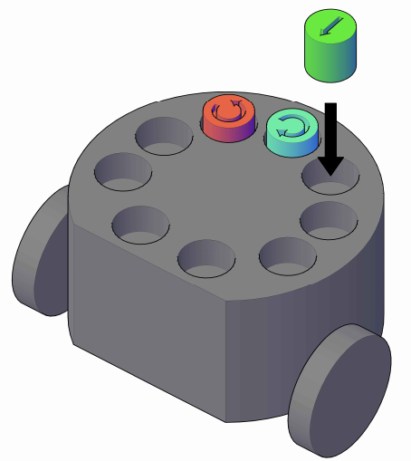

Sistema convertidor de plástico a combustible móvil
- Funding entity: Fondef VIU
- Project ID: VIU23P0007
- Project duration: Sep.2023 - Sep.2024
- Project Members: Claudio Álvarez (Principal Investigator), Miguel Solis (Advisor)
Main Goal:
This project aims to develop a novel system based on a prototype capable of converting plastic into mobile fuel.
Latin American Summer School on Cognitive Robotics 2023
- Funding entity: Google Research
- Project ID: exploreCSR 2022
- Project duration: Jan.2023 - Dec.2023
- Project Members: Miguel Solis (Universidad Andres Bello), Nicolás Navarro-Guerrero (L3S Leibniz University of Hannover), Francisco Cruz (University of New South Wales Sydney)
Main Goal:
The Latin American Summer School on Cognitive Robotics (LACORO) aims to make cutting-edge knowledge of Artificial Intelligence for Robotics Applications more accessible in the Southern Hemisphere. Moreover, we want to foster intercultural student collaboration within and outside the Americas.
Red de prevención, mitigación y rehabilitación de áreas afectadas por incendios forestales
- Funding entity: CYTED through PCI program at ANID
- Project ID: P920PTE0051 for ANID (921PTE0124 for CYTED)
- Project duration: May.2021 - May.2024
- Principal Investigators per country: María Verónica Carranza (Perú), Miguel Solis (Chile), Ellie López (Colombia), Fernando Mendoza (Nicaragua)
Main Goal:
Conform a multidisciplinary network of research groups from Ibero-American countries for proposing management methodologies for the care of forest areas vulnerable to fires with technical proposals for prevention, mitigation and recovery from the danger of forest fires, as well as technological proposals for recovery and rehabilitation of affected areas. Results are then articulated in technology transfer processes and in public policy proposals that allow their implementation.
Robótica educativa a distancia para actividades docentes a través de laboratorios remotos de alta disponibilidad y escalabilidad
- Funding entity: Fundación Gabriel & Mary Mustakis
- Project duration: Feb.2020 - Jan.2023
- Project Members: Patricio Navarrete, Constanza Oliva, Fernando Fuenzalida, Miguel Solis
Main Goal:
This project aims to design and develop an educational robotics remote laboratory, for widening dissemination and practice on science and technology, specifically on robotics through hands-on experiments with real equipment being manipulated remotely, just requiring Internet access and without distinction from the user geographical location.
Programa de apoyo para la generación de Emprendimientos en IoT, Smart City and Smart Industry
- Funding entity: CORFO Antofagasta
- Project ID: 19PAEI02-115402
- Project duration: Oct.2019 - Jul.2020
- Project Members:
Miguel Solis(from proposal to Jan.2020), Claudio Meneses, Hugo Rocha, Ricardo Pérez, Vianca Vega, Lorena Aguilera, Nicolás Rojas, Janett Guerra
Main Goal:
This project aims to develop an innovation and entrepreneurship program on IoT (Internet of Things) through hands-on activities related on different involved disciplines, such as mobile applications, processes monitoring and control and automation, contributing with smart cities and smart industries development based on challenges from real-world problems.
Pre-robot: plataforma para estimular el pensamiento computacional en pre-escolares
- Private funding
- (current) Project Members: Anibal Chila, Cristóbal Nettle, Miguel Solis
- (former) Project Members: Francisca Coiro
Main Goal:
This open-source robot is designed for estimulating and fostering computational thinking abilities on preschool children, without needing resources such as physical equipment or computational tools for coding its desired behavior.

All ongoing material is available and open under GNU General Public License v3.0 at a Github repository here